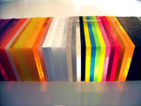

Glossar
Amerikanisches Walnussholz
Das Holz der Walnuss gehört zu den harten Laubhölzern. Die Walnuss ist ein Kernholzbaum mit einer homogenen Holzqualität bezüglich Dauerhaftigkeit, Farbigkeit und Maserung. Die Farbe der mit Öl veredelten Holzoberfläche changiert gleichmäßig zwischen Zimt- und Schokoladenbraun.
Im Gegensatz zum europäischen bzw. französischen Nussbaum weist das Holz der amerikanischen Walnuss deutlich weniger Äste und Verwachsungen auf. Dadurch ergibt sich eine gleichmäßige, ruhige Zeichnung, die sehr gut mit dem klaren Design unserer Möbel harmoniert.
Birkenfurnier-Sperrholz
Bei dem von uns verwendeten Birkenfurnier-Sperrholz werden sieben Lagen Birkenfurnier jeweils wechselnd längs und quer zum Faserverlauf miteinander verleimt. Dadurch entsteht ein weitgehend verzugsfreier Plattenwerkstoff, der gegen das so genannte »Arbeiten« des Holzes resistent ist: Da Holz sich bei Feuchtigkeitsaufnahme aus der Luft in Querrichtung ausdehnt, nicht jedoch längs der Faser, verhindern die gegensätzlich verleimten Faserrichtungen diese Deformation. Daher auch der Name »Sperrholz«.
Blattgold
Als Blattgold bezeichnet man dünn ausgewalzte Goldfolie mit einer Dicke von ca. 0,007 mm. Mit nur einem Gramm Gold lässt sich ca. ein halber Quadratmeter Blattgold herstellen, bei einer Stärke von etwa 100–1000 Atomlagen.
Bei Blattgold handelt es sich um eine Legierung, also eine Mischung aus Gold und anderen Edelmetallen (z.B. Kupfer, Silber, etc.). Durch diese Verbindung zweier Elemente lassen sich die Eigenschaften des Materials positiv verändern. Reines Gold ist sehr weich und wird durch Zusatz eines anderen Metalls gehärtet. Durch Legierung kann auch der Farbton des Goldes verändert werden: Von silbrigem Weißgold bis hin zu honigfarbenen Goldtönen ist jede Farbnuance möglich. Das von uns verwendete 585er Blattgold enthält einen 85,5%-igen Goldanteil in der Legierung. Das entspricht 14-karätigem Gold.
Bei der Verarbeitung von Blattgold wird der Untergrund mit einem milchigen Kleber bestrichen. Die Goldfolie wird mit einer Pinzette aufgelegt und mit einem feinen Pinsel angedrückt. Nach dem Aushärten wird die vergoldete Oberfläche poliert. Der fertige Blattgold-Überzug ist pflegeleicht und lässt sich ganz einfach mit einem feuchten Tuch reinigen.
Flockbeschichtung
Bei der Flockbeschichtung werden kleinste Kunstfaserhärchen statisch aufgeladen und dann einer elektrisch gegensätzlich gepolten Oberfläche ausgesetzt. Durch die Anziehungskraft der mit Kleber versehene Oberfläche setzen sich die Härchen in einer gleichmäßigen Schicht auf das Material. Nach dem Aushärten des Klebstoffes ist die Oberfläche von einem dichten Flor abriebsfester, gleichlanger Flockhärchen bedeckt. Dadurch entsteht ein Überzug mit samtiger Haptik, der auftreffendes Licht seidenmatt reflektiert.
Furnier
Als Furnier bezeichnet man dünne Scheiben Holz, die wie Bretter vom Stamm gesägt oder mit langen Messern vom Stamm geschält werden. Furniere werden entweder auf die Oberfläche von Plattenmaterialien geleimt oder in mehreren Schichten zu stabilen Sperrholzplatten verleimt.
HPL-Beschichtung
HPL-Beschichtungen sind einfarbige, gemusterte oder mit Furnierzeichnung versehene Oberflächendekore. Die Herstellung solcher Beschichtungen erfolgt durch »Verbacken« von dünnen Melaninharz-Schichten mit bedrucktem Dekorpapier. Durch die Erhitzung wird das Papier vom Harz durchdrungen und verbindet sich nach dem Abkühlen zu einem wasserdichten, kratzfesten Material. Das Aufleimen von HPL Dekor auf einen Plattenwerkstoff (z.B. Furniersperrholz) verleiht diesem eine robuste, leicht zu reinigende Oberfläche in gewünschter Farbe / Struktur.
Integralschaum
Zur Polsterung unserer Möbel verwenden wir hochelastisches, geschäumtes Polyurethan, auch bekannt unter dem Namen Integralschaum. Dieses Material sorgt für einen hohen Sitzkomfort und garantiert langanhaltende Produktqualität.
Integralschaum enthält unterschiedliche große Lufteinschlüsse zur gleichmäßigen Dämpfung bzw. Federung von Lasten. Von der Mitte der Sitzfläche bis zum Rand nimmt der Durchmesser dieser Luftbläschen stetig ab. In gleichem Maße verringert sich die Elastizität des Schaumes: je kleiner die Bläschen, desto weniger Kompression findet statt. Dadurch wird das aufliegende Gewicht regelmäßig auf das gesamte Polster verteilt.
Durch die besondere Strapazierfähigkeit dieser Struktur wird die Abnutzung des Materials effektiv reduziert. Das für Polstermöbel typische Problem des »Durchsitzens« wird somit wesentlich verringert, was die Langlebigkeit unserer Produkte erheblich steigert.
Kompositionsgold
Kompositionsgold ist ein beliebter und täuschend echter Ersatz für Blattgold und wird auch häufig als Schlag- oder Blattmetall bezeichnet. Diese Begriffe verweisen auf das Herstellungsverfahren, bei dem das Ausgangsprodukt Messing oder Bronze zu hauchdünnen Blättchen geschlagen oder ausgewalzt werden.
Kompositionsgold aus Messing mit einem Zinkanteil von ca. 15 Prozent ist mit bloßem Auge kaum von echtem Blattgold zu unterscheiden. Der Vorteil von Kompositionsgold – neben dem günstigeren Preis – liegt vor allem in der einfacheren Verarbeitung, da es eine vier Mal höhere Materialstärke als Blattgold aufweist.
Microleder
Microleder ist ein textiler Ersatz für Naturleder. In ihrer visuellen Anmutung unterscheiden sich diese Materialien nur minimal, da die vermeintlich »echte« Lederstruktur bei beiden Stoffen während der Fertigung aufgeprägt wird. Allerdings kommt die Microleder-Produktion vollkommen ohne tierische Verluste aus und sorgt daher für glücklichere Kühe.
Im Gegensatz zu herkömmlichem Kunstleder verfügt Microleder über eine offenporige Oberfläche. Während versiegeltes Kunstleder bei Hautkontakt oft ein klebriges Gefühl verursacht, kann Microleder durch diese Poren »atmen« und ist so viel angenehmer anzufassen. Microleder ist zudem wesentlich haltbarer als Kunstleder und bietet einen seidig matten Glanz, ohne speckig zu wirken.
Öl- & Wachsveredelung
Sämtliche Vollholzkomponenten unserer Möbel werden in einer mehrstufigen Prozedur mit Öl und Wachs oberflächenveredelt. Die dadurch entstehende Schutzschicht macht das Holz unempfindlich gegen Umwelteinflüsse und erzeugt so die besondere optische und haptische Qualität der Produkte von Greim Design.
In diesem zeitintensiven und aufwändigen Prozess wird ein Möbelstück zunächst mit Öl behandelt, das tief ins Holz einzieht und die Poren füllt. Diese erste Ölung verringert die Saugfähigkeit des Holzes und verhindert so das spätere Eindringen von Flüssigkeit (z.B. Wasser) sowie die daraus resultierenden Verfärbungen.
Nach einem finalen Schleifvorgang werden zwei weitere Ölschichten aufgetragen, wodurch eine effektive Oberflächenversiegelung erreicht wird. Abschließend wird das geölte Holz mit einer Wachsschicht versehen, die von Hand aufpoliert wird. So entsteht der spezielle, seidige Glanz, der den natürlichen Charakter der Holzmaserung voll zur Geltung bringt.
PMMA (Polymethylmethacrylat)
Allgemein bekannt unter dem Namen Plexiglas wurde PMMA-Kunststoff 1928 von Otto Röhm entwickelt. PMMA, eine Abkürzung von Polymethylmethacrylat, ist ein sehr robustes und leicht zu verarbeitendes Material. Im Gegensatz zu beispielsweise Glas ist es wesentlich bruchfester und zugleich haptisch warm.
PMMA ist beständig gegen Säuren, Laugen, Benzin und Öl und vergleichsweise kratzunempfindlich. Es lässt sich problemlos sägen, fräsen, schleifen und polieren. Unter Hitzeeinwirkung lässt sich PMMA zudem in jede beliebige Form biegen. Diese Technik wird auch bei der Produktion von PlusTish angewandt: Dabei wird das Material mit einem Heizdraht lokal begrenzt erwärmt und in gleichmäßigen Radien verformt.
Übrigens: Eines der ersten Alltagsprodukte die aus PMMA hergestellt wurden, waren die Deckel der Radio-Plattenspieler-Kombination SK 4 von Braun. Dieses bekannte Designobjekt wurde 1956 von Dieter Rams entwickelt und ist heute vor allem unter seinem Spitznamen »Schneewittchensarg« bekannt (benannt nach eben jenem glasartigen Deckel).
Polsterbezüge
Die von uns verwendeten Polsterbezüge (z.B. Microleder) werden unter ähnlichen Gesichtspunkten hinsichtlich Qualität und Widerstandsfähigkeit ausgewählt. So weisen sämtliche Bezüge eine hohe Abriebsfestigkeit von mindesten 8000 Touren sowie eine starke Reißfestigkeit auf. Die sorgfältige Materialauswahl erhöht die Dauerhaftigkeit der Polstermöbel und unterstreicht unsere Ansprüche bezüglich der Langlebigkeit aller unserer Produkte.
Das von uns verarbeitete Microleder ist pflegeleicht und unkompliziert zu reinigen. Verschmutzungen oder Flecken lassen sich ganz einfach mit einem feuchten Tuch entfernen. Weitere Informationen hierzu finden Sie in den beim Kauf mitgelieferten Pflegehinweisen.
Pulverbeschichtung
Bei der Pulverbeschichtung werden die Partikel des Beschichtungsmaterials statisch aufgeladen und anschließend dem umgekehrt gepolten, zu beschichtenden Gegenstand ausgesetzt. Durch die gleichmäßige Anziehungskraft verteilen sich die Partikel regelmäßig auf der gesamten Oberfläche und bedecken auch verwinkelte Bereiche, die mit klassischen Lackiermethoden nicht zugänglich sind. So entsteht eine homogene, klar definierte Beschichtung. Anschließend wird die Pulverbeschichtung unter Wärmeeinwirkung zu einem festen Überzug verbacken.
Frisch aus der Werkstatt

Stuhl SteckStool mit optionaler Polsterung, die perfekte Ergänzug zu unserem Schreib- & Esstisch DeckTish.
Details
Sessel KubeStool der gepolsterte Sitzwürfel mit anschmiegsamer Rückenlehne.
DetailsKontakt
GreimDesign
Tulpenstiege 1, 48341 Altenberge, DE
- Mobil +49 (0)176 - 20 63 58 75
- E-Mail welcome (ät) greimdesign.de